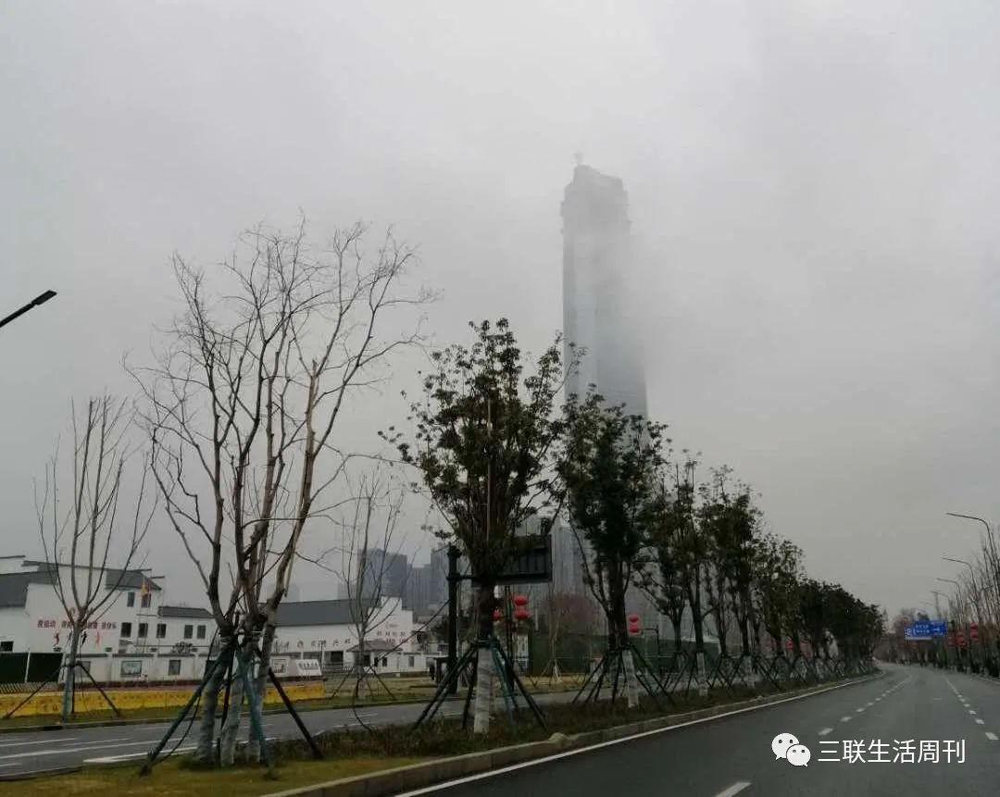
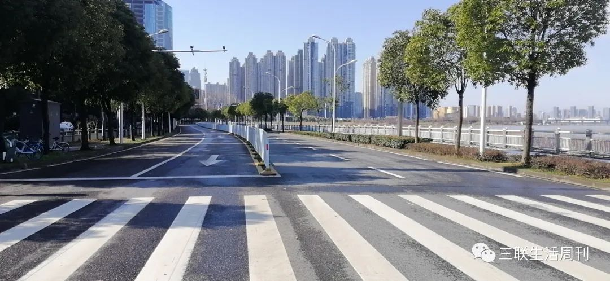
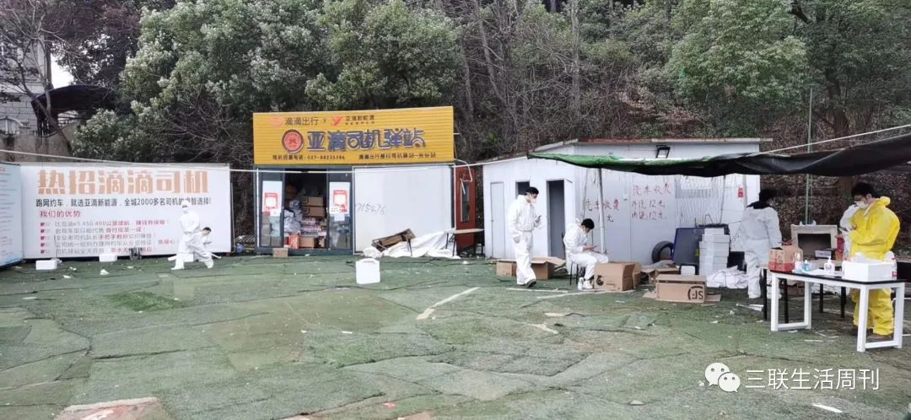
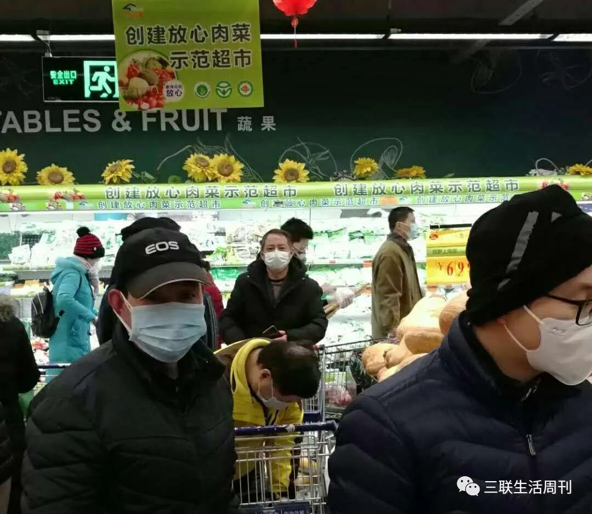
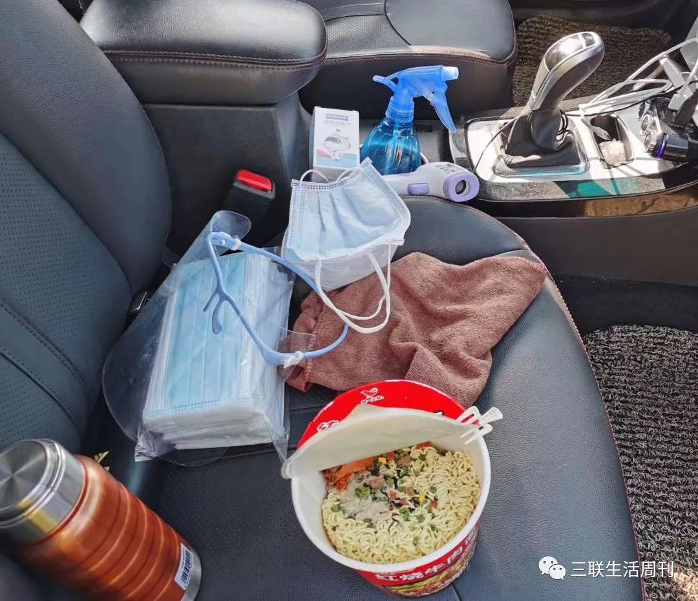

穿越疫区：武汉“爱心司机”一天12小时
原文链接 备份链接 武汉春寒料峭，疫情仍在蔓延。但也因为抗击疫情，本不相识的司机和医生之间，达到了前所未有的默契。“谢谢”和“加油”，是他们每次相遇和分开的标记 文 |《财经》特派武汉记者 刘以秦 编辑 | 谢丽容 图1: 在路上的爱心司 …
2月2日那天早上6点47分，家住武汉三环外的王莉全副“武装”地出门了。从1月26日武汉封城第三天开始，她就一直在做滴滴社区保障车队的司机志愿者。口罩、护目镜、防护服，从早上七点出门到晚上七点回家，将近十二个小时都不能卸下，“防护服统一发的，都很大，我个子比较小，感觉可以装下我两个了。在太阳下十几分钟就会流汗了，仿佛捂着一件不透气的雨衣。”
到了义门社区，王莉就接到了一个让她心情沉重的任务，一位感染新型冠状病毒肺炎的病人去世，她需要开车送家属前往医院料理后事。
//
陪伴也是对逝者的告慰
自从2006年读大学来到武汉，王莉就在这个她眼里“闹哄哄”的大武汉扎下了根儿，成为了一名“新武汉人”。她平时真没有感觉这么爱武汉，但这一次不一样。我是这座城市的主人，我要为她担当”。大武汉是一个移民城市，这场无妄之灾让无数新武汉人更有了归属感。
2月2日当天到了义门社区后，王莉先把车内进行两遍清洁。第一遍使用84消毒液擦拭，然后通风。第二遍使用酒精消毒，之后开始接送社区居民。

王莉正在给后排座位消毒
确认用车的家属后，插钥匙、点火、挂档、给油……一连串的动作王莉一气呵成，体现了一个老司机的职业素养，刚刚还有些紧绷的身体随着进入角色松弛了下来。
王莉很少在车上主动说话，“减少对话的机会，就是减少彼此之间飞沫传染的机会。”但这次王莉主动和病人家属聊天，安慰对方不要太难过。双方都带着护目镜和口罩，尽管彼此看不到表情，但王莉还是希望乘客能感受到自己的关怀。
当天武汉在短暂回暖后，再次阴沉，时不时落下雨滴。天气阴冷，心中积蓄着的情绪更加压抑。世事无常，谁能想到亲人离去如此突然？

空荡荡的武汉长江大桥
到了医院，下车前，逝者家属对王莉致谢告别。按照社区志愿者车辆的管理规定，为了减少感染几率会另安排司机来接返程。而那一次，王莉选择留下等待，“你一会儿回去也要用车的，我在这里等你还更方便。”她说：“自己能做的不多，在别人最伤心的时候，陪伴也是对逝者的告慰。”
回家路上，路过汉口解放大道，王莉看到除了大楼上面写着“武汉加油”，最繁华的武广商场只留下了一块广告牌还在亮着，其余的地方一片暗淡。她打开了车灯，照亮前路。来不及伤感，下一位乘客正在某个地方等她。
//
封城了，但城市还要运转
1月23日，武汉封城。

大雾弥漫的武汉
就在五天前的18日，一个社区还办了万人宴，大部分人都没有想到小小病毒掀起了惊涛骇浪。不断有人确诊，有人死去，恐惧以及因为未知带来的焦虑逐步蔓延，冲淡了春节将至的喜悦。愁云笼罩城市，以至于人们觉得——“那段时间就没有晴天”。
高速运转的城市来了一个急刹车，一时间，稳定而规律的节奏被甩脱了轨。首当其冲的就是交通。封城之后，武汉公交、地铁、轮渡、长途客运暂停运营，网约出租车也停止运营，巡游出租车实行单双号限行。连本地人都会嫌吵闹的大武汉，猛地静止了。

2月16日的武汉，街头依旧空荡（王莉/摄)
武汉市交通运输局随即发布公告，组织安排6000辆网约车和出租车，分配到全市10个中心城区1159个社区，解决市民的出行问题。滴滴也在第一时间调配人手，承担了其中绝大部分网约车出行需求。1月24日当天，王莉在她担任队长的“绿动六队”微信群内率先报名，并鼓动伙伴们报名，两天后她正式开始志愿服务。
“我一直到今天也没告诉家里人每天还在街上开车。”王莉说。父母在湖北荆门乡下住，1月23日封城的消息出来，父母就让她回家。王莉坚定地不肯，“如果我没有感染，肯定是不会离开武汉的。万一我感染了，就更不能去扩大感染范围。”王莉做过职员、做过生意、干过游戏代练，一个人在武汉打拼，遇到修水龙头、换电灯泡这样的事她都亲自来，甚至洗衣机坏了，也能修好。
严格的交通管制让大量医务工作者的上下班成了大问题，有些人改为骑单车或步行，要花费一两个小时上班；有人甚至需要凌晨四点出发步行到医院上班。1月24日深夜，滴滴又召集司机志愿者，成立医护保障车队，免费接送医务人员。至此，1300多名滴滴司机奔赴抗疫一线，支撑起城市的正常运转。

武汉滴滴保障车队正迅速出车
司机志愿者们很快进入角色，算上来往家里和社区的时间，王莉每天工作将近13个小时，社区工作人员手里永远有几项，甚至是十几项工作在等着志愿者。每次接送乘客前后，按照滴滴要求，要各进行一次消毒，“尤其是脚垫，是重点消毒的位置。”为了乘客也为了自己反反复复地擦拭，但心头的隐忧却并不能完全清除。谁都知道，这是一个有风险的工作。
在这个特殊时期，人们想尽各种办法进行防护。滴滴也想出一个简陋却实用的好办法，计划投入1亿元专项资金，为全国数百万在疫情期间提供服务的滴滴网约车加装隔离防护膜，像是给车加了一个透明口罩，这样前后排成为两个相互隔离的“安全舱”；同时滴滴还为2019年12月15日至疫情结束期间所有完成线上订单的司机提供专项肺炎险，为司机的付出加码保障。
现在，没有人提醒，也用不着提醒，每名司机志愿者、每名乘客都会先保护好自己。“几乎所有的乘客一边道谢一边上车，然后主动坐到了后排。”王莉说，“武汉人脾气直爽、火爆，疫情之后，大家都更礼貌了。”

贴有温馨提示的防护隔离膜
//
比普通人多勇敢五分钟
除夕之夜，40岁的武汉人黄飞也拿起手机悄悄报了名，成为第一批滴滴招募到的医护专车司机，专门接送医护人员。经历了滴滴首批志愿者司机集结、防疫安全培训后，捧着发下来的护目镜、口罩、防护服、手套、消毒液、酒精……“搞这么大的阵仗？！”黄飞心想，“这个事情没有那么简单。”

滴滴志愿者在司机驿站休憩
二月的前三天，黄飞连着拉了几位护士，聊了两句，她们都哭起来。“那个时候的情况，出乎所有人的意料，医护人员一进医院，几天都不能出来。谁都受不了啊！”此时，对于新冠肺炎的恐慌逐渐扩散到全国，而武汉的医院挤满了疑似和因为发热前来看病的患者，严重超负荷运转，医护人员的心理压力极大。这种情绪也传递给了司机志愿者。
王莉坦承：“说不怕是假的，每天都要接人送人，怎么会不担心感染？”但第二天起床，王莉如约开车去了义门社区。英雄并不比普通人更勇敢，只是比普通人多勇敢五分钟而已。
遇到风险、极度疲劳的时刻，志愿者心里都会打鼓，也有人因为害怕而退出，但黄飞、王莉以及更多志愿者司机们，却执意将这“多勇敢的五分钟”不断叠加。

担当志愿者的黄飞
2月3日，1000张床位的火神山医院建成，开始投入运行；当天晚上，由体育馆改建的首批三家方舱医院也开始接收病人；各地赴鄂医疗支援队伍源源不断地开赴湖北；近四万多名志愿者奔波在武汉空荡荡的马路上，把医护人员、物资、生活用品甚至发热患者送到他们该去的地方，竭力让这座围城维持着运转和生气。
滴滴志愿者司机的队伍也在壮大。他们中有人是因为强烈的公益心而加入；有人是因为在家赋闲而烦闷；有的开玩笑说是“敌不过社区的动员广播声音太大”，于是下楼投身其中。但他们都清楚，这并不是一件“常规”工作。

滴滴车队不仅解决出行难题，同时承担运送物资的任务
志愿者的家人们苦口婆心地说，“在家看看电视，守着老婆孩子不好吗？”但灾难来临，总有人要去做点什么。
黄飞以前开滴滴快车，同样是开车，感受完全不同。开“快车”是个工作，工作做不好，可以改进，赚钱少一点也没关系。现在做志愿者是个任务，任务完成不好，他心里过不去这个坎儿。
黄飞最主要的任务就是接送医务人员。协和、同济、三医院、人民医院、同济中法新城、协和光谷、人民东院区，这些医院都是黄飞的目的地。近一个月的“任务”，让他知道了不同的医院有着4、6、8三个不同时长的排班。这也让滴滴司机志愿者们在早上6点30分、下午16点、深夜23点和凌晨1点，分别迎来近两个小时的用车高峰。有的志愿者最晚在凌晨四点还送过医护人员。

写有“武汉加油”的广告牌 王莉/摄
司机被医护人员的精神所激励，他们的付出也得到医务人员的认可。有的医务人员当面表达诚挚谢意，也有医务人员在工作群里分享着自己遇到的暖心事，“上次凌晨下班，一位师傅接了我，然后早上六点多还有单子，晚上车子还要充电，他说他就在车里休息了，不然时间都耗在了来回路上。谁都不容易，他们也是战士。”

工作中的滴滴医护专车志愿者
滴滴为了解决一些地理位置相对偏远的医护上下班难题，特别抽调司机志愿者，成立起“特攻队”。当聊起自己所在的，专门接送协和医院中法新城院区的特攻队时，有的司机会立刻报出“93189、97919……”这些是车牌号，对应一位志愿者司机，也是他们好战友的“代号”。
医生奋战在一线，医护专车司机也是。自除夕夜以来，截至2月15日，滴滴医护专车已在武汉、上海、北京、厦门、宁波、南京等城市，免费接送20885名医务工作者，竭尽所能，只为这场战役可以尽早获得胜利，让医护人员们可以踏实休息。
//
“所有的风险我们来承担
为了更多人好好在家”
医护专车之外，解决社区出行服务也是滴滴司机志愿者们的重要工作内容。
“你好！请帮我们买土豆4斤、小白菜2斤、芹菜1斤、大蒜3斤、瘦肉2斤、五花肉2斤、湿纸巾6大包（80片）、医用一次性手套（2盒）、农夫山泉（550毫升、5瓶）……”这些需要购买的物品信息发到志愿者刘宇的手机上，有时是晚上八点，有时是凌晨一两点。大超市的菜场区域，人员聚集，结账还需要排队，存在传染风险。

刘宇经常到超市帮助社区居民采购，
超市中人流仍较为密集
在超市这样的密闭空间里，能看到普通人所做的各种各样的防护，普通的会在鞋外面再套一个鞋套，有的人穿上吃火锅的一次性围裙，夸张点的会把头套在透明塑料袋里。每当狭路相逢两人走近，立即反射式地绕开，仿佛不想和对方共存在同一片空气中。
“很多东西买不到啊！刘宇要在滴滴司机群里问，有一些女性用品还要咨询妻子。担任滴滴志愿者后，他以半天为单位工作，每个半天至少要去七、八家超市、六、七个药房。他知道这些药品关系着生死，即便跑了好几家买不到，第二天还会继续找。
少则几样，多则十几样，因为物资短缺，每多一样物品，就要多跑一个超市。刘宇努力满足每个人的要求。“反正我已经出来当志愿者了，所有的风险就让我们来承担，大家都好好在家。”

刘宇的工作安排表
他买完菜和生活用品，要继续分包、送到社区。他的服务名单上还有位80多岁的奶奶，女儿现在在国外，采购和照顾的任务也由刘宇负责了。
疫情来临，其他的疾病不会偃旗息鼓。心脏问题是其中最多的，其余还包括脑梗、透析、化疗。甚至怀孕临产，产妇不敢去医院，害怕交叉感染，熬到临产只能拨打120急救。但很多医院爆满，协和、同济等大医院只接收发热患者。这个时候，就需要滴滴的志愿者们挺身而出，担负起急救车的功能。
2月5日，一位高龄老人因为手术后需要拆线，王莉帮助老人往返医院。接送完老人之后，她觉得自己额头发烫，一时之间非常恐慌。拿出随身携带的体温计，早中晚各量一次，体温都正常后才稍稍放心，事后猜想可能是因为防护服、护目镜、口罩捂得太严实，加上为了照顾手术后的老人而车内空调开得太大，导致自己有了“发烧”的假象。

滴滴社区保障车队司机给居民运送的物资
2月5日下午4点多，王莉送完防护物质返回的途中，被路边一位短头发的女孩子拦了下来。她的声音很年轻，“这是我做的便当，给你们吃。这几天我看到在路上跑的只有滴滴，你们太辛苦了。”王莉忙拒绝，“马上就下班了，晚上回家自己做，你把这些饭留给别人吧。”女孩子坚持，“带上吧，不用下车，不用和我接触，我把饭放在后座上了。”
从2月份起，越来越多的居民开始给志愿者司机送饭。刘宇所在的团队有一百多人，每天中午都有居民自发地来送饭。
//
用车灯照亮这黯淡时刻
身处抗疫一线，志愿者们都会听到各种消息，心情如同过山车。但无数人与人之间的温暖与互助，让他们更乐观的前行。看到有医护人员牺牲，看到更多人千里驰援为武汉运送物资，看到海外中国人为湖北接力采购，王莉觉得自己也没有理由停下来：“大家都在为武汉拼，我们怎么能放弃。”
她更是想到被疫情影响到的全国其他的司机同行们，订单下滑收入减少，也都没有放弃，坚持在一线满足大家的出行需求。同时，滴滴也在为更多的司机们想办法。继在湖北16个城市车辆实行租金顺延后，也在近期倡议全国范围租赁公司伙伴，为小桔车服合作租赁公司的在租车辆顺延一个月的租金，司机暂停缴纳2020年2月份租金，车辆租期相应顺延一个月。

工作中的王莉
连续精神高度紧张地服务了二十多天，性格火爆的武汉人必须发泄一下。50岁的志愿者胡建斌把自己在滴滴志愿者大群里的19个兄弟姐妹单独拎了出来，建了一个小群。“他们压力太大，在大群里发泄，影响不好。在小群里可以痛快痛快嘴。”心里痛快了，车开得也顺畅。
这些性格各异的老武汉、新武汉人，组成了滴滴司机志愿者队伍。他们早出晚归，构建起城市的毛细血管，为城市的正常运转输送着“血液”。他们像很多中国人一样，在这场始料未及的疫情之中选择担当，默默奉献着自己的力量，聚沙成塔，共同维系着城市的生命与未来。

胡建斌的午餐
他们都是最普通的人，只是选择比普通人多勇敢5分钟，于是便叠加起无数个5分钟。在最黯淡的时刻，武汉这座城市依旧能被车灯照亮。
（图片提供：王莉、刘宇、黄飞、胡建斌）
策划：三联.CREATIVE
监制：路瑞海、高效
微信编辑/设计排版：赵星宇
作者：吴楠、方禾
⊙文章版权归《三联生活周刊》所有，欢迎转发到朋友圈，转载请联系后台。
文章已于修改
原文链接 备份链接 武汉春寒料峭，疫情仍在蔓延。但也因为抗击疫情，本不相识的司机和医生之间，达到了前所未有的默契。“谢谢”和“加油”，是他们每次相遇和分开的标记 文 |《财经》特派武汉记者 刘以秦 编辑 | 谢丽容 图1: 在路上的爱心司 …
原文链接 备份链接 曹彦/ 华中科技大学新闻与信息传播学院 伍杨的一身“行头”几乎把整个人都吞了。 臃肿的棉袄外套着白色的防护服，戴着皱起来的蓝色防护手套，头顶是一个半旧棒球帽，只露出染过色的齐肩短发，透明护目镜下是两层叠加的口罩。她站在 …
原文链接 备份链接 除了牛奶和饼干，司机的后座上常会捡到医生和护士们留下的礼物，有时候是一罐八宝粥，或者一枚珍贵的N95口罩。 文 | 林秋铭 编辑 | 金匝 1 如果没有这场疫情，今年春节，52岁的李明和他的妻子将会出现在希腊。这是他和 …
原文链接 备份链接 武汉封城后的逆行者 空荡荡的武汉城区。自1月23日10时起，武汉全市关闭公共交通。本刊记者/黄孝光 摄（下同） 1月23日，武汉封城，此时，护士梅伊和胡云云成了逆行者。 她们是大学同学，毕业后分别去了武汉华润武钢总医院 …
原文链接 备份链接 有救援经验的社会组织，响应了。 武汉宣布封城后三小时，郝南就在社交媒体上发布了nCOV Relief（后改名NCP生命支援）志愿者招募书，发起新冠肺炎患者和疑似病人居家隔离治疗项目。郝南身在北京，是卓明灾害信息服务中 …